器材库 > APS及其以下画幅可换镜头数码相机 > D300S
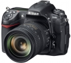
规格总览
产品类型
APS画幅可换镜头数码相机
发布日期
2009-07-30
厂家推荐价格
220,000.00 （日元）
停产
是
影像规格
影像传感器
CMOS
影像传感器尺寸
23.6 x 15.8mm
总像素
1310万
有效像素
1230万
影像处理器
EXPEED
色彩滤镜
RGB原色彩色滤镜
低通滤镜
感应器件前面，不可移动
色彩空间
Adobe RGB/SRGB
最大解像度
4,288 x 2,848
静态图像尺寸
4,288 x 2,848 [L], 3,216 x 2,136 [M], 2,144 x 1,424 [S]
静态图像格式
JPEG, RAW, RAW+JPEG
静态图像质量
精细，标准，基本
画幅比
3:2
短片尺寸
1280 x 720 / 24fps, 640 x 424 / 24fps, 320 x 216 / 24fps
除尘系统
多重除尘系统
镜头和对焦
镜头卡口
Nikon F
对焦系统类型
TTL相位检测
对焦点
9点 / 21点 / 51点
对焦模式
单次伺服自动对焦（S）；连续伺服自动对焦（C）；根据拍摄对象的状况自动启用预测对焦跟踪；手动（M）：支持电子测距仪
AF辅助灯
有
手动对焦
支持
曝光控制
测光模式
中央重点测光, 点测光
测光范围
矩阵测光或中央重点测光：0-20EV~点测光：2-20EV
曝光模式
P（程序自动曝光）, A（光圈优先自动曝光）, S（快门速度优先自动曝光）, M（手动测光曝光）
快门类型
电子控制，纵走式，焦平面快门
快门速度
1/8000-30 秒（以 1/3、1/2 或 1EV 为步长进行微调）、B 门、X250
曝光补偿
±5EV以1/3或1/2或1EV级调整
自动曝光锁
有
自动包围曝光
拍摄 2 到 9 幅，以 1/3，1/2，2/3 或1 EV为步长进行微调
ISO感光度
200, 400, 800, 1600, 3200, 可扩展至100-6400
白平衡
日光, 白炽灯, 闪光灯, 色温调节, 阴天, 荧光灯, 阴影, 自动, 预设白平衡
自拍
10秒, 2秒, 5秒, 20秒
连拍
每秒7张
闪光灯
内置闪光灯
弹出式
闪光模式
TTL, 慢速同步, 减轻/消除红眼
闪光指数
GN 17 (ISO 200)
闪光同步模式
前帘同步, 后帘同步
外接闪光灯
SB系列闪光灯
取景器/显示屏
取景器
眼平五棱取景器, 固定
取景范围
100%
取景放大倍率
0.94倍
屈光度调节范围
-2.0 ~ +1.0
反光镜
快速瞬回半透明
景深预视
有
LCD类型
低温多晶硅TFT LCD
LCD尺寸
3.0英寸
LCD像素
92万
视野率
100%
Live View
有
Live View 对焦模式
手持模式和三脚架模式，可作虚拟水平调整
文件输入/输出
存储卡
CF, SD/SDHC
数据接口
USB2.0
视频/音频接口
HDMI 输出, MIC 输入
电源
电池
一节EN-EL3e锂离子充电电池
续航能力
约 950 张
机身规格
材质
镁合金机身外壳
颜色
黑色
尺寸
147 × 114 × 74mm
重量
840g
其它
支持语言
中文（简体）, 中文（繁体）, 英语, 日语, 丹麦语, 荷兰语, 法语, 德语, 意大利语, 韩语, 挪威语, 波兰语, 葡萄牙语, 俄语, 西班牙语, 瑞典语
附件
EN-EL3e 锂离子充电电池，MH-18a 快速充电器，目镜盖DK-5，橡胶眼杯 DK-23，USB 线 UC-E4，视频/音频线 EG-D2，相机带 AN-DC4，LCD显示屏盖 BM-8，相机盖 BF-1A，配件热靴盖 BS-1，软件套装 CD-ROM 光盘
软件
Nikon Transfer 和ViewNX软件套装
备注
3D彩色矩阵测光II (G及D型镜头) ；动态 D-Lighting 在昏暗或高光环境下可优化色调还原效果；兼容 GPS 装置 GP-1（另购）
老猫也识途2014-07-22 21:194.75 分
操作性 5.00功能性 5.00美观性 4.50趣味性 4.50耐用性 5.00性价比 5.00解像力 4.50色彩还原 4.50
笨笨的平凡世界2014-06-04 17:044.31 分
操作性 5.00功能性 4.50美观性 5.00趣味性 3.00耐用性 5.00性价比 5.00解像力 3.50色彩还原 3.50
readbook2013-10-22 16:584.75 分
操作性 5.00功能性 5.00美观性 5.00趣味性 5.00耐用性 5.00性价比 4.00解像力 4.50色彩还原 4.50
蓝天彩云间2013-06-24 17:314.69 分
操作性 5.00功能性 4.50美观性 5.00趣味性 4.50耐用性 5.00性价比 4.50解像力 4.50色彩还原 4.50
小型猫科动物2013-03-09 23:434.63 分
操作性 5.00功能性 5.00美观性 5.00趣味性 4.50耐用性 5.00性价比 4.00解像力 4.00色彩还原 4.50
绯色星云2013-02-28 01:044.5 分
操作性 4.50功能性 4.50美观性 5.00趣味性 4.00耐用性 5.00性价比 4.00解像力 4.50色彩还原 4.50
kimithomas2012-12-28 21:353 分
操作性 5.00功能性 4.50美观性 5.00趣味性 0.50耐用性 5.00性价比 0.50解像力 0.50色彩还原 3.00
johnlu0072012-12-12 19:434.88 分
操作性 5.00功能性 4.50美观性 5.00趣味性 5.00耐用性 5.00性价比 5.00解像力 5.00色彩还原 4.50
malcolm2012-12-08 01:223.94 分
操作性 4.50功能性 4.00美观性 4.00趣味性 3.50耐用性 4.50性价比 4.00解像力 3.50色彩还原 3.50
融552012-02-14 19:114.44 分
操作性 4.00功能性 3.00美观性 5.00趣味性 4.50耐用性 5.00性价比 4.50解像力 5.00色彩还原 4.50
产品图 / 样片
尼康 D300S
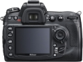
尼康 D300S
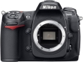
尼康 D300S
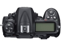
尼康 D300S
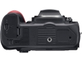
尼康 D300S
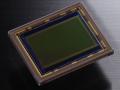
尼康 D300S
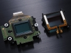
尼康 D300S
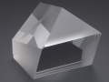
尼康 D300S
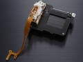
尼康 D300S
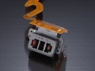
尼康 D300S
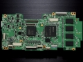
尼康 D300S
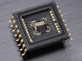
尼康 D300S
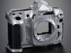
尼康 D300S
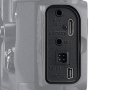
尼康 D300S
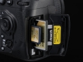
尼康 D300S
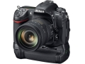
尼康 D300S
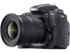
尼康 D300S
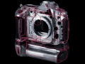
尼康 D300S
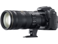
尼康 D300S
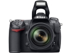
尼康 D300S
评测 / 相关文章
该产品暂无存档的评测文章
相关文章
- ［资讯］尼康数码单反汇总 － 截至2013年5月 （存档）
- ［资讯］支持全幅长焦 尼康D300S/D300固件升级 （存档）
- ［资讯］自制d300s GPS成功后的经验之谈 （原站已下线）
- ［资讯］2月7日尼康D800发布 Coolpix系列2号推出 （原站已下线）
- ［专题］何日话别？最该退役的那些单反们 （存档）
- ［资讯］全面解读 尼康D7000视听手册上线 （存档）
- ［资讯］D7000以下犯上 D300s升级不远 （原站已下线）
- ［行情］尼康D300S机身降价至9399元 （原站已下线）
- ［资讯］HSGi推出尼康D300S液晶屏保护罩 （原站已下线）
- ［资讯］尼康D300s发布最新固件Ver 1.01 （原站已下线）
- ［试用］尼康D3x、D700和D300s的漫拍闲聊 （原站已下线）
- ［资讯］尼康数码单反汇总 － 截至2013年5月 （原站已下线）
- ［资讯］支持全幅长焦 尼康D300S/D300固件升级 （原站已下线）
- ［资讯］自制d300s GPS成功后的经验之谈 （原站已下线）
- ［资讯］2月7日尼康D800发布 Coolpix系列2号推出 （原站已下线）
- ［专题］何日话别？最该退役的那些单反们 （原站已下线）
- ［资讯］全面解读 尼康D7000视听手册上线 （原站已下线）
- ［资讯］D7000以下犯上 D300s升级不远 （原站已下线）
- ［行情］尼康D300S机身降价至9399元 （原站已下线）
- ［资讯］HSGi推出尼康D300S液晶屏保护罩 （原站已下线）